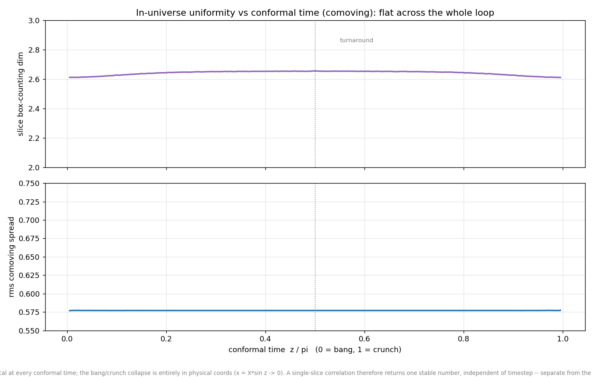
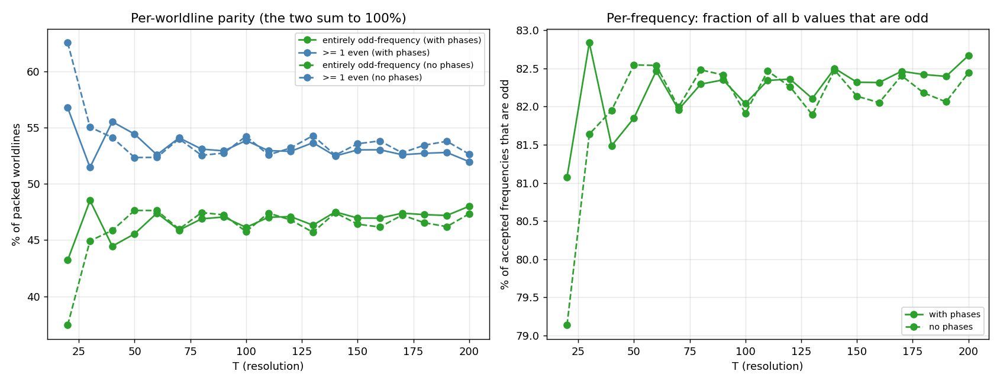
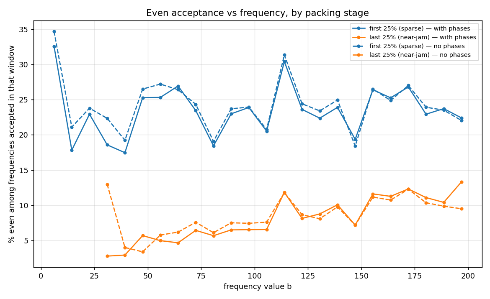

Phase schema, second look: uniformity and frequency parity are phase-blind too
Follow-up to yesterday’s campaign results: the remaining structural probes, repeated on the phased data. First, in-universe uniformity over conformal time (T = 200, 5 seeds): the slice box-counting dimension stays in a 2.61–2.66 band and the rms comoving spread sits on √⅓ across the entire loop — indistinguishable from the no-phase torus figure of 07-02. The phased matter slices are exactly homogeneous at every conformal time, not just at the turnaround.

Second, the even/odd frequency structure
(analyze_freq_parity, new). The expectation was that
phases would move it: an even-frequency worldline’s turnaround
speed becomes |a·b·cos(f)| — a free phase near
π/2 lets even movers sit almost at rest, dissolving the reason the
packing prefers odd frequencies. The measurement says otherwise:
- Per-worldline parity vs T: 48.0% entirely-odd with phases vs 47.3% without at T = 200, coincident curves across the whole ladder.
- Per-frequency parity: 82.7% vs 82.4% of accepted b values odd.
- Stage-resolved even acceptance (needs acceptance order, so the runner’s shuffled subsamples cannot serve it — two one-off full engine dumps at T = 200, N = 159,658 phased / 148,639 no-phase): in the sparse first quartile evens are accepted at ~20–27% across the whole frequency band; near jam they are squeezed to ~3–13%, recovering with b. Phased and no-phase overlap within noise at every b, in both stages.


Takeaway: the odd-frequency preference of the jam is not a turnaround-kinematics effect — handing even worldlines a rest-enabling phase buys them nothing. The parity structure must be set by whole-loop geometry (the swing budget and coprimality shaping how a trajectory threads every timestep), which fits yesterday’s picture: phases raise how much packs, but every scaling and structural readout of the jam is unchanged. Also worth noting: the hard-wall era’s “no evens below b ≈ 34” forbidden zone is absent on the torus — sparse-stage evens appear at low b in both variants; near jam, low-b evens are still the first casualties.